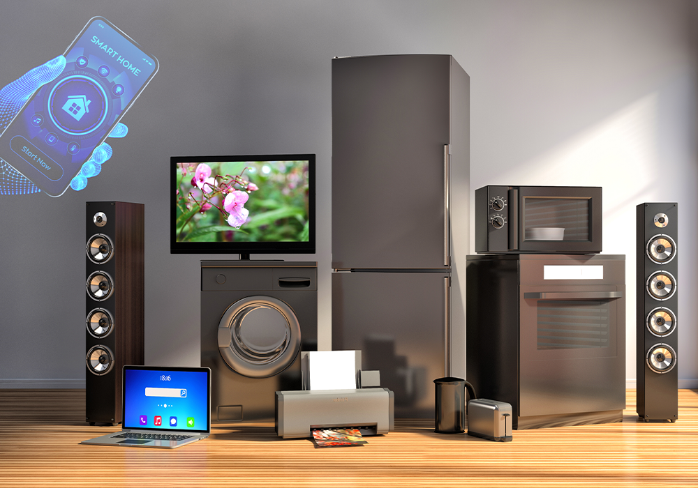
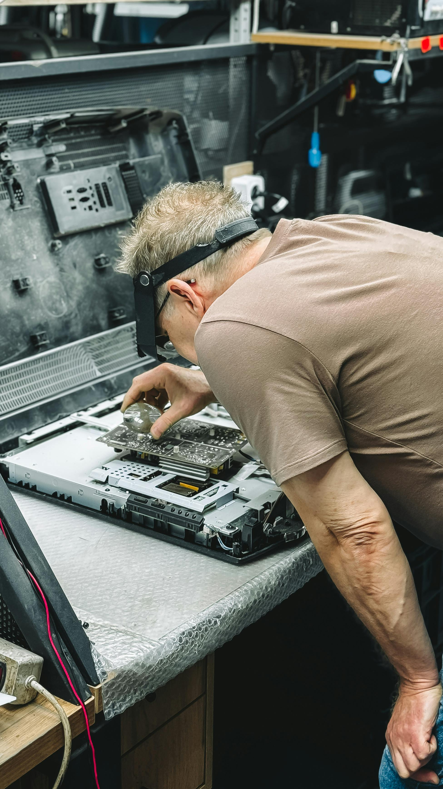
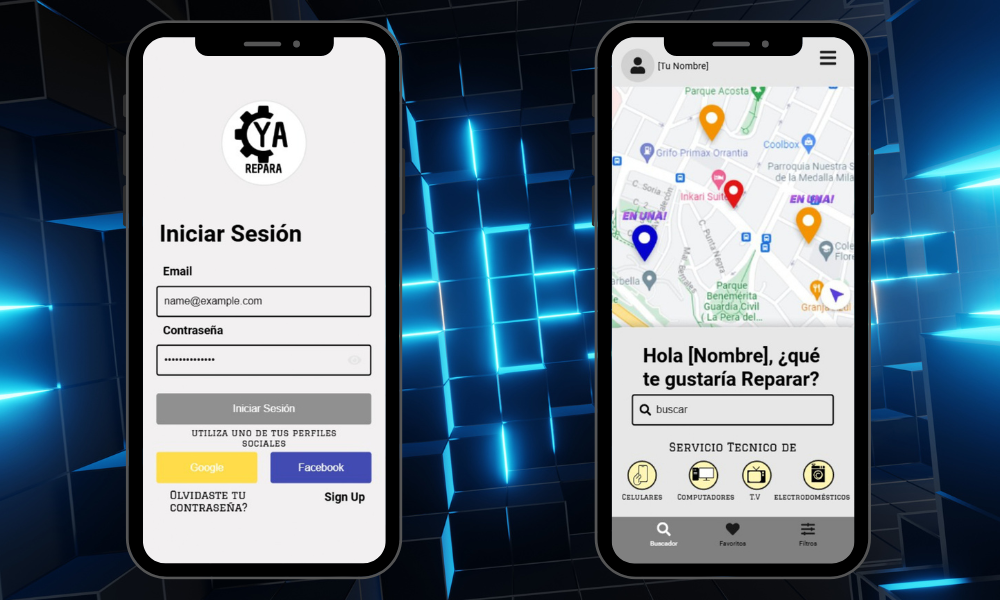
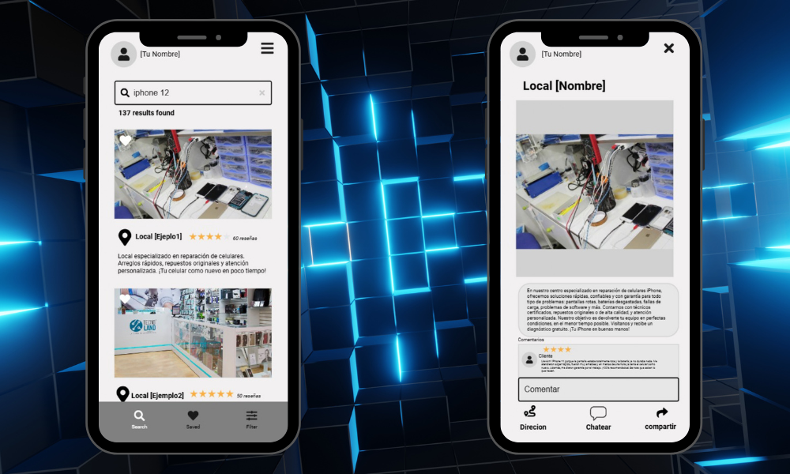
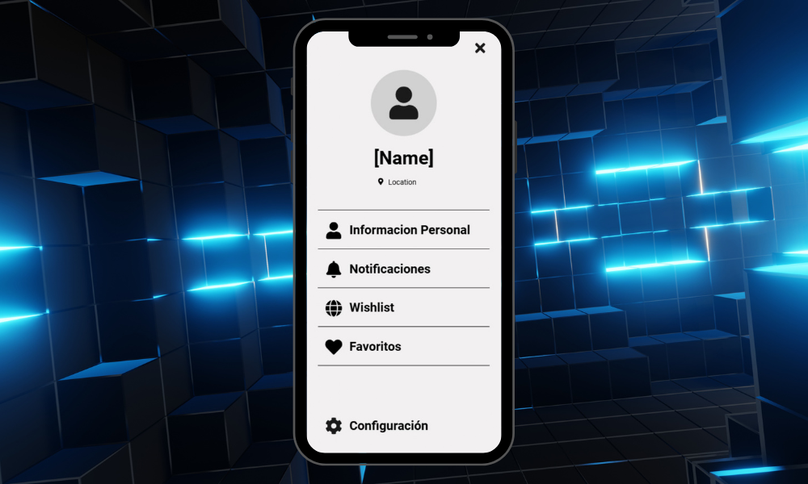

¿Qué es ReparaYa?
ReparaYa es una aplicación que brinda mayor accesibilidad al buscar soluciones para electrodomésticos dañados. Te conecta con técnicos o locales cercanos, verificados y calificados, para ofrecerte la mejor opción con total seguridad.
¿Cuál es el problema?
¿Cuántos electrodomésticos se convierten en basura por una falla mínima que podría repararse en minutos? La desinformación y la dificultad para encontrar técnicos confiables llevan a desechar aparatos que aún tienen vida útil.
Nuestra solución
ReparaYa verifica a todos los técnicos y locales registrados, mostrando sus títulos, experiencia y reseñas reales. Los usuarios ahorran tiempo, dinero y estrés, mientras que los técnicos honestos pueden hacer crecer su negocio.
Según su disponibilidad, los técnicos pueden ofrecer servicios a domicilio si el cliente lo requiere. La plataforma es intuitiva, accesible y está diseñada para ser usada por cualquier persona.
- Técnicos y locales verificados con credenciales visibles
- Reseñas y calificaciones de usuarios reales
- Servicio a domicilio (según disponibilidad)
- Búsqueda inteligente por cercanía
- Mayor seguridad y transparencia para el cliente
Resultados de nuestra encuesta
Realizamos una encuesta para entender las necesidades de los usuarios. Estos son los hallazgos clave:
- Más del 80% no conoce ninguna app especializada en reparación de electrodomésticos.
- Casi el 90% considera rentable que los negocios se promocionen mediante una app.
- 60%+ se sentiría muy seguro si pudiera ver información verificada del técnico.
- Más del 60% cree que una herramienta como ReparaYa sería muy útil.
- 31,2% conoce solo 1 o 2 establecimientos de reparación cerca de su residencia.
- Más de la mitad ha tenido una buena experiencia al reparar sus dispositivos.
Estos datos confirman la necesidad y el potencial de ReparaYa en el mercado.
Vista previa de la aplicación
Diseños conceptuales (mockups) de la interfaz de ReparaYa:
Pantalla principal
Búsqueda por cercanía
Perfil del técnico
Demostración de la aplicación
Video explicativo con la navegación básica y funcionalidades de ReparaYa:
Equipo de desarrollo
ReparaYa fue creado por estudiantes de la Universidad San Buenaventura comprometidos con la innovación y la sostenibilidad: